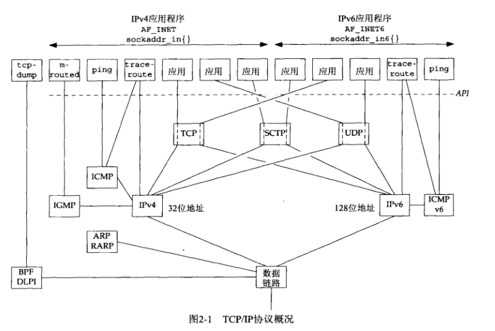
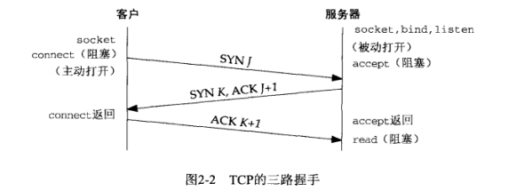
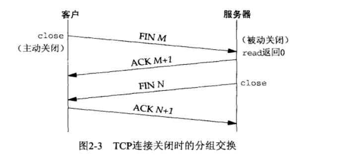
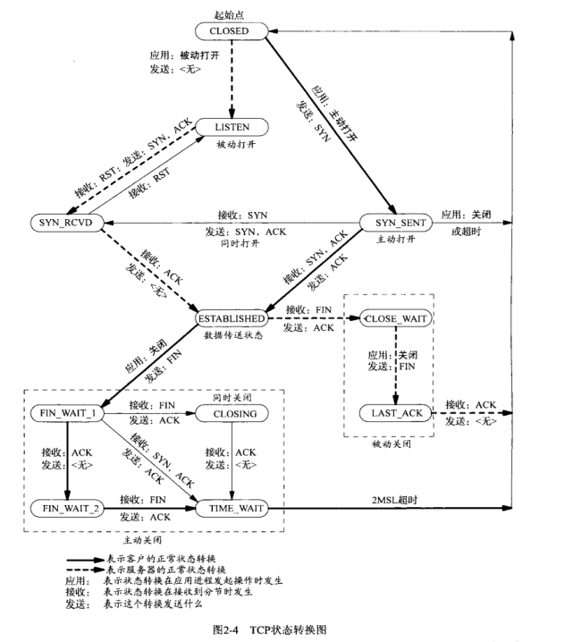
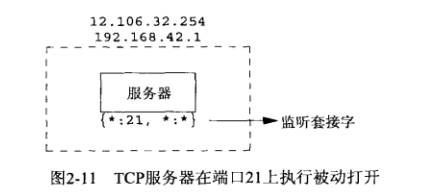
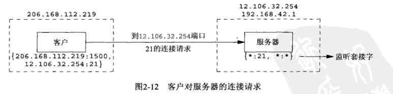
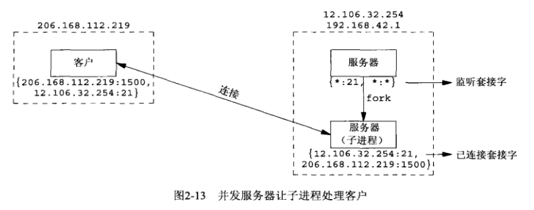
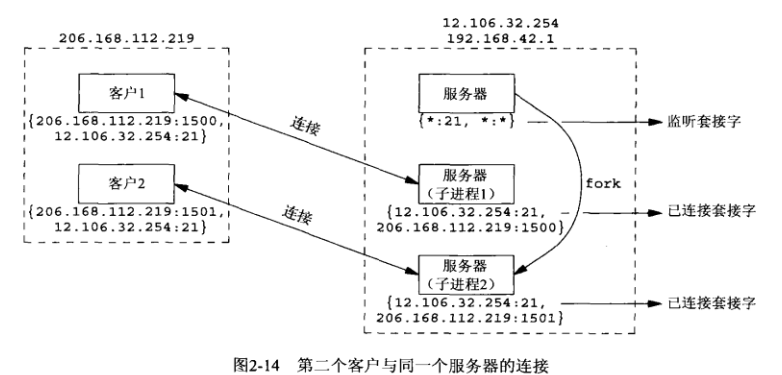

UNIX网络编程（二）
传输层：TCP、IP、SCTP

术语解释
IPv4：网际协议版本4。给TCP、UDP、SCTP、ICMP和IGMP提供分组递送服务
IPv6：网际协议版本6。给TCP、UDP、SCTP、ICMPv6提供分组递送服务
TCP：传输控制协议。为用户进程提供可靠的全双工字节流。TCP套接字是一种流套接字（stream socket）。TCP关心确认、超时和重传之类的细节。
UDP：用户数据报协议。是一个无连接协议。UDP套接字是一种数据报套接字（datagram socket）。UDP数据报不能保证最终达到它们的目的地。
SCTP：流控制传输协议。提供可靠全双工关联的面向连接的协议。使用“关联”来指称SCTP的连接，因为SCTP是多宿的，从而每个关联的两端均涉及一组IP地址和端口号。提供消息服务，维护来自应用层的记录边界。
关联：两个系统间的一次通信，可能因为支持多宿而涉及不止两个地址。
ICMP：网际控制消息协议。处理在路由器和主机之间流通的错误和控制消息。ping和traceroute同样使用ICMP。
IGMP：网际组管理协议。IGMP用于多播，在IPv4中是可选的。
ARP：地址解析协议。ARP将IPv4地址映射成一个硬件地址。
RARP：反向地址解析协议。把一个硬件地址解析成一个IPv4地址。
ICMPv6：ICMPv6综合了ICMPv4、IGMP和ARP的功能。
BPF：BSD分组过滤器（BSD packet filter）。该接口也提供了对于数据链路层的访问能力，通常在Berkeley的内核中找到。
DLPI：数据链路提供者接口（datalink provider interface）。该接口也提供数据链路层的访问能力，通常随SVR4的内核提供。
RFC：请求评注 Request for Comments。所有网际协议都有RFC的文档来定义，这些RFC就是它们的正式规范。
双栈主机：或者说IPv4/IPv6主机，表示同时支持IPv4和IPv6的主机
三次握手

- 服务器准备接受外来连接，
socket、bind、litsen。该过程称为被动打开 - 客户端通过调用
connect发起主动打开。发送SYN报文，告诉对方初始序号。（SYN报文不携带数据，其所在的IP数据报仅包含一个IP首部，一个TCP首部和可能有的TCP选项） - 服务器发送ACK+SYN。
- 客户端确认SYN，发送ACK。
TCP选项：
- MSS选项：告知对端，我的最大报文段大小
- 窗口规模选项：指定TCP首部中通告窗口必须左移扩大的位数
- 时间戳选项：防止失而复现的分组可能造成的数据损坏
后两个选项也可以称为长肥管道选项
四次握手

- 应用进程首先调用
close，该过程为主动关闭(passive close)。该端的TCP发送一个FIN报文段 - 接收到FIN的对端执行被动关闭(passive close)。要进行ACK确认，同时要想应用程序传递一个文件结束符(EOF)。
- 一段时间后，应用进程将会调用
close关闭套接字。同时发送一个FIN。 - 接收到FIN的对端，将会进行ACK确认。
步骤2到步骤3之间，服务器仍有可能发送数据给客户端。这个状态称为半关闭(half-close)
状态转换图
状态转换图给出了11种TCP状态的名称。这些状态可以使用netstat显示，它是一个在调试客户/服务器应用时很有用的工具。

TIME_WAIT状态
停留在这个状态的持续时间是最长报文段生命期（MSL）的两倍，也称2MSL。
TCP的实现要为MSL选择一个值。RFC 1122的建议是2分钟，而传统上使用30秒。所以TIME_WAIT状态的持续时间一般在1分钟~4分钟之间。具有最大的跳限的报文段在网络中的存在时间不应该超过MSL秒。
什么是迷途的重复分组（lost duplicate）或漫游的重复分组（wandering duplicate）？
当两个路由器之间链路断开或者某个路由器崩溃后，路由协议需要数秒钟或数分钟才能稳定并找出一条新的通路。这个时间段内就有可能发生路由循环。发送端TCP发现该报文段超时，就会重传该报文段，重传的报文段会选择某条候选路径到达目的地。但是若是路由循环突然修复了，那这个早先迷失在循环中的报文段也会被送到目的地。
TIME_WAIT状态存在的两个理由：
可靠地实现TCP全双工连接的终止
保证客户端发送的最后一个ACK报文能够到达服务器，因为这个ACK报文可能丢失，站在服务器的角度看来，我已经发送了FIN+ACK报文请求断开了，客户端还没有给我回应，应该是我发送的请求断开报文它没有收到，于是服务器又会重新发送一次，而客户端就能在这个2MSL时间段内收到这个重传的报文，接着给出回应报文，并且会重启2MSL计时器。
允许老的重复报文段在网络中消逝
防止类似与“三次握手”中提到了的“已经失效的连接请求报文段”出现在本连接中。客户端发送完最后一个确认报文后，在这个2MSL时间中，就可以使本连接持续的时间内所产生的所有报文段都从网络中消失。这样新的连接中不会出现旧连接的请求报文。
端口号
- 0~1023：知名端口号
- 1024~49151：注册端口号
- 49152~65535：动态端口号/私有端口号
一个TCP连接的套接字对是一个定义该连接的两个端点的四元组：本地IP地址、本地TCP端口号、外地IP地址、外地TCP端口号。
表示每个端点的两个值（IP地址和端口号）通常称为一个套接字。
并发服务器
监听套接字：外地IP地址和外地端口没有指定，我们用*:*来表示。
其中，星号称为通配符(wildcard)




参考资料
[1] 《UNIX网络编程_卷1》